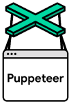

I built the front end of my fullstack Job Calls application in React with Chart.js. It displays data relevant to the various classifications of members represented by the union about available jobs, and also serves as an index into the state of the construction sector in the Toronto area. Users can search by date, worker classification and company. Returned results can be filtered further by keywords.
React Chart.js
Github
See it Live
Please note this is hosted on a free tier at Heroku and apps are put to sleep after 30 minutes of inactivityThe API for my Job Calls application started as a Node script that uses Puppeteer to automatically sign into the IBEW Local Union 353 website, parse the DOM and extract information about jobs available to electricians, line workers and communications workers. Each day the script writes the selected HTML elements to a new JSON file. This data is then used to populate a Postgres database. The API returns JSON data after recieving requests at either of two endpoints.
Node Express.js Puppeteer Knex.js Postgres
Github
See it Live
Please note this is hosted on a free tier at Heroku and apps are put to sleep after 30 minutes of inactivityWhen I took CS50 in 2020, I was fascinated by a series of projects related to iterating though information representing image data. My background in photography probably accounts for this fascination. Looping through image data made me feel close to the material of the image itself in a way that was familiar from my days spent in the darkroom and in photoshop.
In one CS50 project, we had to search for jpeg headers in a disk image to recover lost images. In another we implemented a series of filter algorthims which mutated image information pixel by pixel. Doing this in C was exciting due to all the trouble you can get into with pointers or otherwise accessing the wrong area in memory. It felt like being close to the materiality of the machine.
I wanted to try a similar project in Javascript. Image Destroyer reads pixel data from a canvas element, and renders a div element for every pixel. By constraining the divs in a flexible container, they form a grid, and when the width of this flexible container coresponds to the width of the original image, the 'div image' resolves. By manipulating this width, it is possible to scramble the image. The text is rendered in the same grid, by calculating from a string which divs should be assigned a special 'text pixel' class. Obviously this is not the most efficient way of rendering text or images, but I was excited by the visual effect of it.
Vanilla JS, HTML, CSS
Github
See it Live
This is the evolution of one of the first things I built with javascript. I love archaic technology and analog electronics. It was a fun exercise in manual DOM manipulation and CSS styling.
Vanilla JS, HTML, CSS
Github
See it Live
Hello, I'm Patrick! I'm a web developer with a background in Visual Art. I hold an MFA from Western University where I also taught courses in traditional darkroom photography. I am also a liscensed electrician in the province of Ontario. I love building things.

Puppeteer